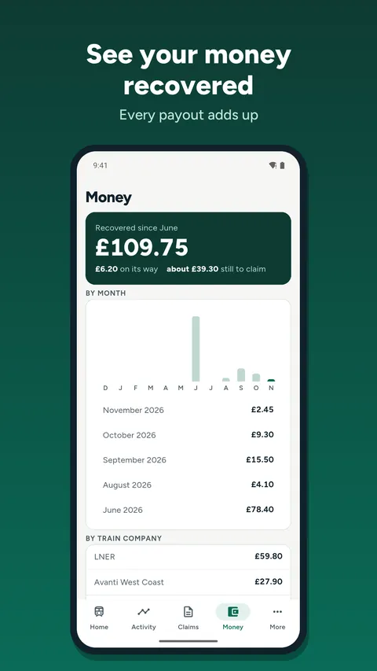
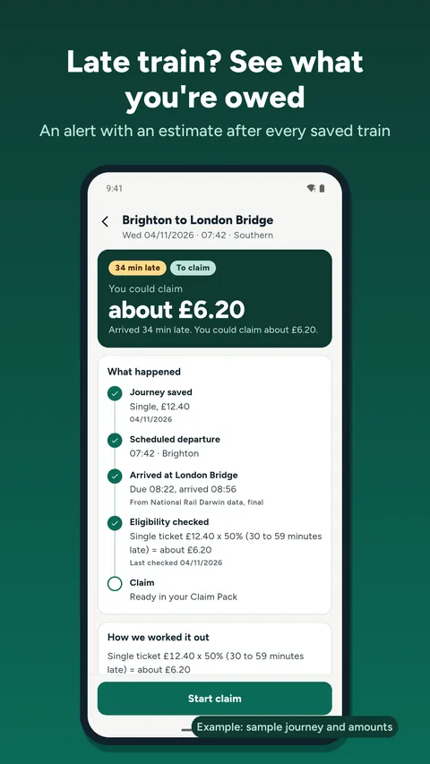

Independent app. FareBack is made by Kodfu Bilisim. It is not affiliated with or endorsed by any train company, National Rail, Network Rail, Rail Delivery Group, Great British Railways or the Department for Transport. You submit every claim yourself; the train company decides whether to pay.
Why Pro pays for itself
| Your commute | One claim | Pro costs |
|---|---|---|
| Annual season £4,640 (£10.00 a journey), 20 minutes late | £2.50 | £1.99 a month |
| Monthly season £400 (£10.00 a journey), 35 minutes late | £5.00 | £1.99 a month |
| Hybrid, Flexi Season £180 (£11.25 a journey), 35 minutes late | about £5.63 | £1.99 a month |
| Hybrid, £18.00 Off-Peak single, 31 minutes late | £9.00 | £1.99 a month |
Examples on a DR15 company using the published bands: 25% of a journey from 15 minutes, 50% from 30 minutes. One claim a month covers Pro; FareBack never takes a cut of what you are paid.
What FareBack Pro does for commuters

Your commute, checked every travel day
Save your stations, departure times and travel days once. FareBack checks those trains every travel day, skipping bank holidays, against National Rail data on actual arrival times.
Season ticket maths done for you
Weekly, monthly, annual and flexi: FareBack works out the journey value with your train company’s rules and shows what each delay is worth.

A 28-day look-back
Start today and FareBack looks back over the last 28 days, the usual claim window, and gives you a Claim Pack for every delay you can still claim.
Every claim tracked
Claim Packs with copy buttons, reminders before each window closes, a tracker from submitted to paid, a money recovered total and claim history export. Unlimited journeys (fair use).
Free first: the free version checks up to 30 journeys a month and shows what your commute could have claimed over the last 28 days.
On the often-late lines
Commuter guides with each company’s season ticket rules, automatic claims and claim links:
- SouthernSeason ÷ 464, 240, 120, 40, 10 or Flexi 16 · Auto Delay Repay for Key
- ThameslinkSeason ÷ 464, 240, 120, 40, 10 or Flexi 16 · Auto Delay Repay for Key
- NorthernSeason ÷ 464, 40, 10 or Flexi 16 · free tickets as an option
- Avanti West CoastSeason ÷ 464, 240, 120, 40, 10
- TransPennine ExpressSeason ÷ 464, 120, 40, 10
- Great Western RailwaySeason ÷ 464, 40, 10 or Flexi 16 · 200% at 2 hours
- South Western RailwaySeason ÷ 464, 40, 10 or Flexi 16 · Automated Delay Repay for Touch
- SoutheasternSeason ÷ 464, 120, 40, 10 or Flexi 16 · One Click Delay Repay
Hybrid workers
Travelling two or three days a week, many people buy a Flexi Season (8 days in 28) or day tickets. Both qualify for Delay Repay: a Flexi Season journey is usually valued at the price divided by 16, and day tickets get the normal single or return share. Set your travel days in FareBack and it checks only those days.
Commuter rights in one place
- Season ticket Delay RepayThe daily value maths, caps and refunds
- Strike daysWhich companies give season holders a day back
- Claim rejected?Challenge it, with a letter to copy
Commuter questions
Is FareBack Pro worth it for a season ticket?
If your train is late enough to claim once a month, usually yes: a 20-minute delay on a £10 season journey pays £2.50 and Pro costs £1.99 a month. Try the free version first to see what your commute could have claimed over the last 28 days.
Does FareBack submit my claims?
No. FareBack gets every detail ready with copy buttons and opens the right claim form; you submit it yourself, in about a minute, and the money goes straight to you.
How do I cancel Pro?
In Google Play: your profile picture, Payments and subscriptions, Subscriptions, FareBack. Cancel at least 24 hours before renewal.
Let FareBack watch your trains
Save a journey and FareBack checks how late the train really arrived, using National Rail data, after it is due. If you can claim, you see the delay, the train company’s rule and an estimate, and your Claim Pack is ready: every detail with a copy button and a link to the right claim form. You submit the claim yourself, and every penny goes to you.


Free: up to 30 journeys a month checked, Claim Packs, reminders before the 28-day window closes, a claim tracker and a Delay Repay calculator for single, return and season tickets.
FareBack Pro, £1.99 a month or £12.99 a year (7-day free trial on annual): your commute checked every travel day, season ticket maths done for you, a 28-day look-back with a Claim Pack for every delay you can still claim, unlimited journeys and claim history export. Prices include VAT.
Android now; iPhone version not yet available. For train journeys in Great Britain. FareBack never takes a cut.